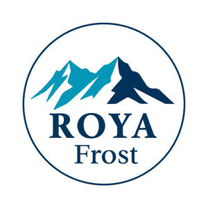

Trade Mark Journal No.2025/009 28 February 2025
UK00004162119 18 February 2025 (29,30)

- Class 29
- Frozen vegetables; Frozen spinach; Frozen fruits; Frozen sweet corn; Fruit leathers.
- Class 30
- Ice cream; Cream (Ice -); Ice milk [ice cream]; Ice cream desserts; Ice cream cones; Dairy ice cream; Ice cream sandwiches; Ice cream cakes; Ice cream confectionery; Ice cream confections; Ice cream with fruit; Fruit ice cream; Ice creams; Vegan ice cream; Ice cream gateaux; Ice cream bars; Ice, ice creams, frozen yogurts and sorbets; Ice cream stick bars; Fruit ice creams; Frozen confectionery containing ice cream; Ice creams flavoured with chocolate; Ice creams containing chocolate; Ice lollies; Ice cream (Binding agents for -); Ice confectionery; Ice confections; Fruit ice; Ice lollies being milk flavoured; Ice candies; Ice milk bars; Cream puffs; Ice lollies containing milk; Ice pops; Ice-cream; Cream buns; Confectionery; Chocolate confectionery; Lollipops [confectionery]; Confectionery chocolate products; Dairy confectionery; Sugar confectionery; Sherbets [confectionery]; Sherbet [confectionery]; Chocolate flavoured confectionery; Fruit confectionery; Chocolate confectionary; Almond confectionery; Peanut confectionery; Chocolate for confectionery and bread; Frozen confectionery; Confectionery (Non-medicated -); Non-medicated confectionery; Chocolate confectionery containing pralines; Confectionery bars; Nut confectionery; Confectionery items formed from chocolate; Sherbets [confectionery ices]; Fruit jellies [confectionery]; Ice confectionery in the form of lollipops; Confectionery in frozen form; Confectionery containing jam; Yogurt (Frozen -) [confectionery ices]; Frozen dairy confections; Sorbet; Sorbets; Sorbet mixes [ices]; Sherbets [sorbets]; Sorbets [ices]; Ice-cream cakes; Sherbets [water ices]; Frozen yogurt [confectionery ices]; Profiteroles; Fruit ice bars; Fruit ices.
Optima Distribution Limited